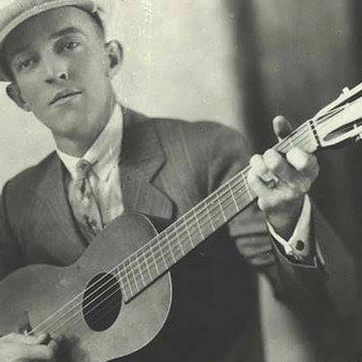
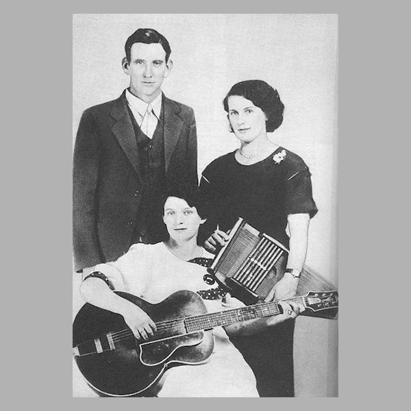
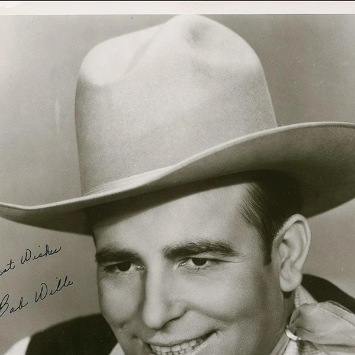
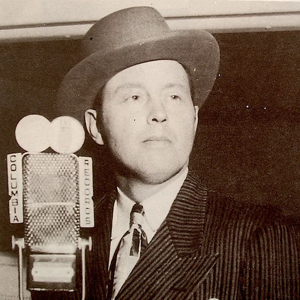
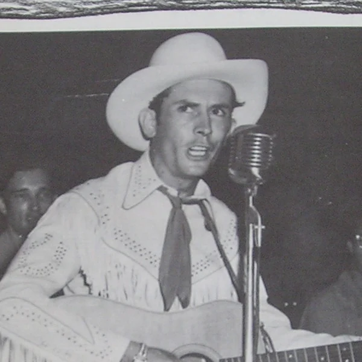
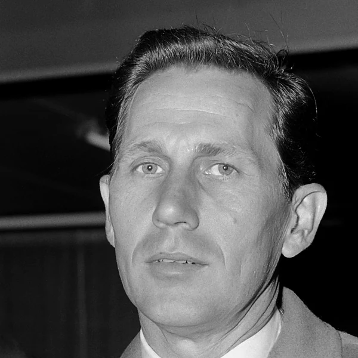
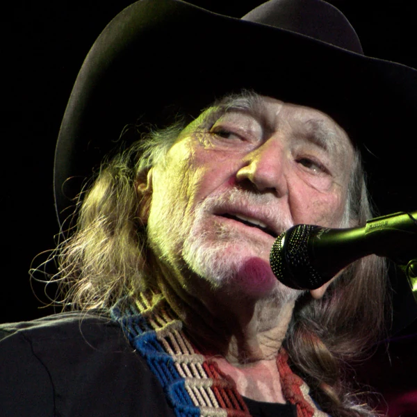
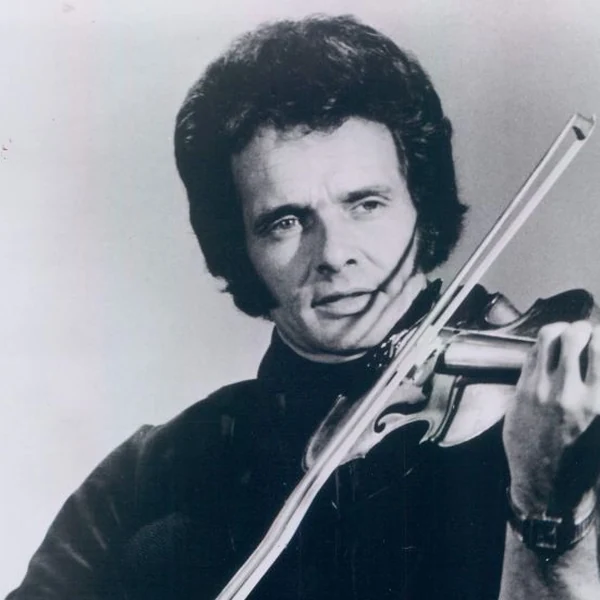

Country is a form of American popular music that developed from rural and working-class musical traditions during the early 20th century. Its songs generally put the voice and the story in the foreground, with arrangements that leave plenty of space for the words to be heard. Early Country was closely connected with string-band music and ballads, but the genre has since taken in amplified instruments and modern studio production. Some styles are built for dancing, while others give a singer room to tell a story about work, relationships or the place they come from. Country is often presented as the sound of one particular sort of American life, although its musical roots are much more mixed than that image suggests. Black and white musicians contributed to the traditions from which it emerged, and the music has changed repeatedly as audiences and the industry have changed. The common thread is less a particular instrument than a recognisable approach to storytelling and performance.
The word Country refers to the music's association with rural life, but the label was not there from the beginning. When record companies began selling southern string-band and ballad music in the 1920s, they often called it Hillbilly music. The name was memorable, if not especially flattering, and it helped companies market recordings to a supposedly rural audience. Country and Western became a common industry term around the middle of the 20th century as musical styles associated with the American West were brought under the same heading. Country eventually became the simpler everyday name. There is a small irony here. A genre presented as the authentic voice of the countryside was being named and sold largely by businesses operating in cities. The music was real enough, but the label tells us as much about the customers record companies imagined as it does about where the music came from.
Country became a commercial genre in the 1920s, when radio and recording companies began bringing regional southern music to national audiences. The traditions behind it were much older. Ballads and fiddle music brought by European settlers had mixed with Black American musical practices, including the banjo tradition and elements of Blues. Musicians did not always divide those influences into neat categories, although the record business soon tried to. As the genre expanded, dance bands developed Western Swing and performers in bars helped establish the harder sound of Honky-Tonk. Nashville grew into an important recording centre, particularly after the Second World War, and producers developed arrangements intended to reach a wider Pop audience. Other musicians resisted that polish or borrowed from Rock, giving Country several competing directions at once. More recent recordings have taken ideas from contemporary Pop and Hip Hop production. Through all of this, traditional styles have continued alongside the commercial mainstream, which is why a modern Country chart and a local string-band gathering can sound as though they belong to different musical worlds.
Country music usually gives the singer a central role, with lyrics that tell a story or speak plainly about a recognisable situation. A song might describe a relationship falling apart or the practical frustrations of work without needing much explanation. The vocal delivery often draws on regional speech patterns, although Country singers do not all share the same accent. Acoustic guitar and fiddle are strongly associated with earlier styles, while the banjo and steel guitar became important parts of the wider tradition. Electric guitars and drums are common too, especially in modern Country. Rhythms can have a simple two-beat drive or the rolling feel of a shuffle, depending on whether the music is aimed at dancing or listening. Production has changed enormously, and some recordings now borrow heavily from Pop. What tends to remain is the priority given to the words and the character of the performance. If the story gets lost under the arrangement, something recognisably Country may have gone missing with it.








Country has played a major role in how Americans understand rural life and working-class identity. Its stories often take ordinary concerns seriously, including financial pressure, family life and the feeling of being overlooked by people in power. But the genre's public image has also been shaped by the recording industry's decisions about who it was supposedly for. In the 1920s, companies commonly separated southern music into categories aimed at Black and white customers, despite the shared musical traditions behind many of those recordings. The result helped make Country appear more exclusively white than its actual history. Women and other performers who did not fit the industry's preferred image have also had to argue for space within it. Country has carried conservative and progressive ideas at different times, so treating it as the voice of a single political outlook misses much of the story. For a genre so interested in everyday people's lives, the argument over whose lives count as Country has been remarkably persistent.